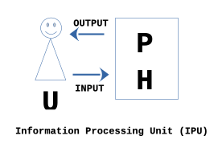
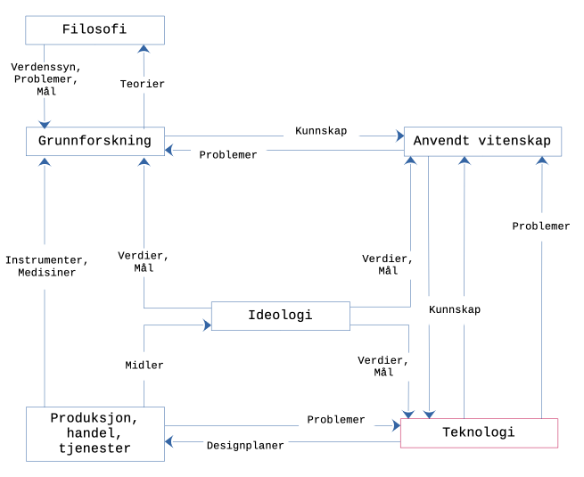

Programmering og informasjonssystemer
Skrevet av Janis Gailis
Kort sammendrag
I dette dokumentet stiller jeg spørsmål om programmering vil være en allminnelig ferdighet i nær fremtid. Studenten bør ta en stilling til det selv, men i konteksten av vårt studiet ønsker jeg å foreslå en positiv holdning til anskaffelse av ferdigheter i programmering.
Jeg reflekterer også over ulike posisjoner i samfunnet, som man potensielt kan innta som følge av avsluttet studiet hos oss. Jeg prøver å gi noen innspill til de som spør "hva skal jeg bli etter fullført studium?"
Jeg drøfter også begrepet informasjonssystemer fra et vitenskapelig perspektiv. Mitt ståsted er preget av scientisme - uansett hva er mulig og verdt å vite, er det best å få vite ved hjelp av vitenskapelig metode. Jeg tar også utgangspunkt i at det er mulig å erkjenne realiteten (realisme) og forsøker å etterleve en etisk sekulær humanisme - strebe etter biologisk, mental og sosial velferd for seg selv og for andre. Jeg verdsetter logikk og matematikk, samt tenker at i en vitenskapelig tilnærming er alle ting enten et system eller en faktisk eller potensiell komponent av et system (systemisme).
I det siste kapittelet reflekterer jeg over sammenhengen mellom metodene for prosjektadministrasjon (sosioteknologi) og metodene for utvikling av programvare (generell teknologi og fysioteknologi).
Om bruk av pronomer
Jeg bruker ikke pronomen "vi" om en spesiell gruppe, men for å inkludere leseren som en iakttaker. "Vi" hjelper også å unngå passiv verbalform. "Vi antar" er ofte bedre enn "Det antas" osv. Jeg bruker "du", hvis jeg ønsker å henvende meg til en posisjon student på vårt studiet. Det er ikke en personlig henvendelse.
Med "vårt studie/studium" mener jeg års- og bachelour program i informasjonsteknologi og informasjonssystemer ved Universitetet i Agder (.htm). Med "våre studenter" mener jeg alle de som tar vårt studium eller enkeltemner.
Hvorfor programmering?
Spør du generativ ferdigtrent transformator om matoppskrifter, bursdagstaler, søknadsmaler, kjærlighetssorg, hvordan bli millionær og løsninger på oppgavene i IS-114 ...? Bruker du Logoge Spam når du kjører bil? Kjøper du lydbøker, bøker og andre varer/artefakter "på nett"? Kjøper du buss-, tog- og flybilletter "på nett". Bruker du en "laptop" eller spillkonsoll? Bruker du smarttelefon (mobiltelefon med datamaskinfunksjoner)? Betaler du med betalingskort? Chatter du med andre personer på Itangasrm, Fekobaco, Megeserns, Wasaphtp, Dodirsc ...? Betaler du regninger i "nettbank"? Har du en kryptolommebok?
Hvis du svarer ja på minst ett av spørsmålene, så er du en bruker av en regnemaskin og dataprogrammer. Fra et forbrukerperspektiv, så trenger du ikke å tenke på prinsippene bak design, virkemåte, historie og produksjon av en vare eller en artefakt (med de fordelene og ulempene det fører med seg). Men fra et nysgjerrig student-perspektiv ville du kanskje lurt på hvordan disse dataprogrammene blir laget? Og kanskje også på hvorfor mennesker har laget datamaskiner og dataprogrammer (og all teknologi for en saks skyld) i det hele tatt? Og kanskje du har allerede prøvd å lage noen dataprogrammer selv? Eller du ønsker å lære å lage dataprogrammer for å få datamaskinen(-e) til å gjøre noe for deg eller for andre? Og er det nødvendig å innta en annen posisjon (f. eks. programmerer) enn forbrukerposisjon for å kunne gi andre råd om bruken av datamaskiner?
Uansett ditt fokus nå, så er du, mest sannsynlig, meget avhengig av dataprogrammer i ditt dagligliv. Du har også sikkert hørt diskusjoner om innføring av mer programmeringsundervisning på alle trinn i utdanningsløpet (Kunnskapsdepartementet, 2023, .htm). Det kan også hende at din oppmerksomhet er blitt fanget av mediaoppslag om at datamaskiner brukes som hjelpemiddler både i forskning og i praksis innen medisin, sosiologi, historie (A Portrait of Tenochtitlan, 2023, .htm), romforskning (.htm) og andre fagfelt. Det er mulig at du har kommet over ord som bioinformatikk (.htm), "data science" (ingen innarbeidet norsk oversettelse foreløpig? .htm) eller nevroinformatikk (.htm). Mange menneskelige aktiviteter har og sannsynligvis vil ha mer behov for personer, som kan løse problemer ved hjelp av datamaskiner. Stadig flere verktøy, som regnark, eller elektroniske komponenter ("gadgets") blir markedsført med muligheter for scripting (.htm), dvs. muligheter for å konfigurere verktøyet ved hjelp av programmering. Noen (Douglas Rushkoff i boken "Program or Be Programmed") sammenlinger det å kunne programmere med det å kunne lese. Med andre ord, det mangler ikke på påstander om at man bør kunne programmere for å bli inkludert i det moderne samfunnet. For at vi selv skal være i stand til å vurdere om slike påstander er sanne eller usanne, trenger vi å vite mer om programmering. I tillegg, en massiv innføring av datamaskiner i menneskenes hverdag, skaper problemer i seg selv. Slike problemer kan bare løses av mennesker, som forstå hvordan datamaskiner funksjonerer.
Gjør det nå! Spørsmål til refleksjon.
Argumentere mot at det er nødvendig å lære å programmere, både i tidlig barndom og i et studiet om informasjonssystemer. Diskutere og kartlegge (bryte ned / dekomponere) fordeler og ulemper med forbrukerperspektivet.
Er programmerer en ingeniør?
Våre studenter spør oss om hvor stor vekt blir det lagt på programmering i vårt studium. De spør også om hvor mye matematikk må de kunne for å kunne fullføre studiet. Noen spør også om man blir en ingeniør etter fullført studium (og eventuelt kan fortsette på et ingeniørstudium senere). De korte svarene kan være - programmering er en viktig del av systemutvikling, programmeringsspråkene "låner" en god del fra språket til matematikken, og vårt studiet annonseres ikke som en ingeniørutdanning, men det er mulig å fortsette med ingeniørstudier etter vårt studiet.
For mer detaljert diskusjon vil vi "spørre om hjelp" fra andre disipliner. De etablerte disiplinene (.htm) i vitenskap er astronomi, fysikk, kjemi, biologi, psykologi og sosiologi. Når det gjelder posisjoner og roller i samfunnet, så kan vi "spørre" en sosiolog (for eksempel, Emil Durkheim eller Lucien Levy-Bruhl). Sosiologene definerer en posisjon som et objektivt sted (stilling) i en organisasjon, som et individ kan og må innta. Vanligvis følger det med normer med en posisjon, som er objektive regler, som lar en individ innta en posisjon. Når et individ har inntatt en posisjon, spiller individet en rolle. En rolle er vanligivis bredere enn en posisjon, siden forskjellige individer har sine egne personlighetstrekk. Programmerer og ingeniør kan betraktes som posisjoner, men siden det ikke finnes objektive regler for å innta slike posisjoner, kalles de ofte for stereotypier (inngrodd, forenklet forestilling om hvordan noe eller noen er; fordom). I tillegg til de nevnte posisjonene, kan også posisjoner som konsulent, systemanalytiker, systemutvikler, IT ansvarlig, [system]designer betraktes som stereotypier.
La oss utførske videre stereotypier programmerer og ingeniør i relasjon til vårt studieprogram. Vi har allerede fremmet en hypotese om at programmering vil være en viktig ferdighet i fremtiden. I beskrivelsen av vårt studieprogram (.htm) er det uttrykt en visjon om at studentene skal kunne utvikle ferdigheter til å delta i utvikling av fremtidens løsninger. Men visjoner er hardt å etterprøve, samt konsekvensene av visjoner som har "makt" bak seg (institusjonalisert, det vil si abstrakt) er uforutsigbare. Litt mer presist lovnad under læringsutbytte i form av ferdigheter, er at kandidaten, etter fullført studium, skal kunne analysere brukerbehov, modellere informasjonssystemer, programmere og utvikle løsninger, og beherske relevante verktøy, teknikker og fagstoff. Programmering er også nevnt under læringsutbytte i form av kunnskap, hvor det loves at studenten skal ha bred kunnskap om sentrale områder innen systemutvikling som analyse, design, programmering, algoritmer og databaser, samt aktuelle teknologier.
Så hva skiller en uteksaminert kandidat fra vårt studieprogram fra en kandidat, for eksempel, fra et studieprogram i datateknologi, hvor de uteksaminerte kandidatene blir ofte kalt [data]ingeniører? I vårt studieprogram ønsker vi spesielt å ha fokus på anvendelsen av datateknologien i samfunnet generelt. Vi fremmer også et helhetlig syn på systemutviklingsprosess, hvor programmering er kun en del av denne prosessen. Det er viktig å nevne her at når vi snakker om prosjektledelse og prosjektadministrasjon, så snakker vi mer om såkalte beste praksiser og ikke vitenskapelig testbare fenomener. De samme gjelder såkalte agile metoder, som dere vil høre mer om i løpet av vårt studium.
Vårt institutt for informasjonssystemer har også en målrettet satsing på samarbeid med lokale bedrifter, slik at studentene kan få en tildlig erfaring med hvordan reelle arbeidsplasser (posisjoner) funksjonerer. Bedriftene, som vi samarbeider med om studentprosjekter, har forskjellig profil, men de fleste bedriftsrepresentanter rapporterer tilbake at de har en nytte av den programmeringskompentansen, som våre kandidater besitter. Våre uteksaminerte kandidater går vanligvis inn i posisjoner systemutvikler eller [data]konsulent.
Utvikling av databehandling i nettsky har åpnet opp for modeller som er optimalisert for rask behandling av store mengder data (på engelsk big data). Mye av programvareutvikling foregår i virtuelle felleskap og prosessering av data skjer i nettsky. Virtuelle felleskap har mange publiseringskanaler hvor forskjellige modeller for programvareutvikling blir diskutert og nye posisjoner blir også definert. Eksempler på slike posisjoner er DevOps-ingeniør (Dev står for Development og Ops står for Operations [1]), dataforsker (se mening for den engelske data scientist .htm), dataingeniør (se mening for den engelske "data engineer" for .htm) og ML-arkitekt (ML - Machine Learning).
I følge utdanning.no (.htm) jobber en dataingeniør med systemutvikling og drift av maskiner eller systemer. Denne korte definisjonen refererer ikke til data og er foreldet. Mening til det engelske ordet data engineer er vanligvis relatert til en som deltar i å bygge systemer for å tilrettelegge for datainnsamling og bruk. Det passer bra med definisjonen av posisjonen ingeniør:
ingeniør - fra fransk ingénieur, dannet til den middelalderlatinske betydningen 'maskin' av latin ingenium; yrkestittel for personer, vanligvis med bachelor eller masterutdanning i ingeniørfag; 3 OVERFØRT person som (med grunnlag i vitenskapelig forskning) vil forandre eller avvikle det bestående og bygge opp noe nytt (.htm)
Hvis vi definerer posisjon programmerer, som en posisjon, som er bemannet av et individ for å utarbeide, skrive og prøve ut program(mer) for [data]maskin, så kan vi konkludere at noen av oppgavene i denne posisjonen kan overlappe med oppgavene i posisjonen ingeniør.
Med andre ord, gjennom vårt studieprogram ønsker vi å tilby studentene en [tverr]faglig utdanning, som gir studentene muligheter til å utvikle seg videre både i ingeniør- og konsulent-retning.
Gjør det nå! Spørsmål til refleksjon.
Diskuter i gruppen om deres forståelse av de nevnte posisjonene (inkludert posisjon som student, dvs. en posisjon hvor man fortsetter på et masterstudiet). Kjenner du til flere posisjoner relatert til IT og IS, som ikke er blitt nevnt? Diskuter potensielle utfordringer med at det ikke finnes normer for posisjoner som programmerer, hacker, ML-arkitekt osv.
Fagfeltet informasjonssystemer
Dette kan overlappe noe med IS-100 stoff, men er veldig sentralt for å plassere våre aktiviteter i en større sammenheng.
På norsk brukes begrepet informasjonsssystemer for å beskrive databehandlingsssystemer eller verktøy for å samle inn, lagre og redigere, analysere og presentere diverse typer data. Et eksempel er geografiske informasjonssystemer (GIS). Slike systemer kan brukes i aviasjon, landbruk, byggebransjen, romforskning og mange andre områder med samfunnskritisk menneskelig aktivitet.
Individene i posisjonene ved vårt institutt (IIS) jobber hovedsakelig i en tverrfaglig retning, som kombinerer informatikk (vitenskap om strukturen, driften og anvendelsen av datamaskiner .htm, som tilsvarer den engelske computer science) med økonomi, ledelse, administrasjon, psykologi, sosiologi og andre fagfelt og disipliner. Som nevnt innledningsvis, så brukes datamaskiner i dag i de fleste menneskelige aktiviteter. Informasjonssystemer er et tverrfaglig subjekt for utforskning, som alltid involverer en datamaskin (ikke alltid i form av laptop eller smarttelefon) eller et datasystem (et sammensatt system med mange komponenter, som for eksempel WorldWideWeb). Vi kan også låne begrepet "information processing unit" fra filosofen og betrakte den som en alltid tilstedeværende komponent i informasjonsssystemer.

Figur 1. Informasjonsprosesseringsenhet etter Bunge.
For at informasjonsprosessering skal være mulig, tre ting må være tilstedet, - en bruker U med hjerne, en fysisk maskin med energikilde H og et program P.
Et annet begrep som vi må se på er informasjonsteknologi. Studiet vårt kalles års- og bachelorstudiet i informasjonsteknologi og informasjossystemer. Man skulle tro at det er bare å ta bort U, så har vi informasjonsteknologi igjen i form av H og P. Men det er ikke så enkelt. La oss prøve å forklare med litt synsing og litt fakta fra fortiden.
På 1950-tallet hadde den amerikanske økonomien stor optimisme og sterk vekst, og det oppsto en middelklasse, mange små bedrifter, men også store konsern, som hadde behov for forskjellige typer av arbeidskraft og var opptatt av sterk og rask vekst. Det er sannsynlig at disse faktorene, kombinert med teknologiutviklingen under krigen, skapte miljø for nye anvendelser av datamaskiner, for eksempel, som hjelpeverktøy i prosjektadministrasjon, spesielt med vekt på regnskap. I denne konteksten foreslo Harold J. Leavitt og Thomas L. Whisler (1958) begrepet informasjonsteknologi, som kunne bety minst 3 ting:
- teknikker for prosessering av store mengder med data så raskt som mulig, og det skulle være mulig ved hjelp av en høy-hastighets datamaskin
- anvendelse av statistiske og matematiske metoder for beslutningsproblemer, og det skulle være mulig ved hjelp av teknikker som matematisk programmering og med metoder som operasjonsforskning (dere vil reflektere rundt administrasjon av operasjoner i prosjekt-delen og Karlsens bok dreier seg i stor grad om det; se også Wikipedia artikkelen om "Operations management" (.htm) )
- simulering av høyere ordens tenkning ved hjelp av dataprogrammer
Hvis vi "spør" en filosof (Mario Bunge) om informasjonsteknologi, så plasseres den inn under en større kategori teknologi. I følge Bunge rommer teknologi alle praksisorienterte fagområder så lenge de anvender kunnskapen fra forskning (vitenskap). Slike områder kan være:
- fysioteknologi (sivil, mekanisk, elektrisk, atom- og rom- ingeniørvirksomhet)
- kjemiteknologi (industriell kjemi, kjemisk ingeniørvirksomhet)
- bioteknologi (farmakologi, medisin, tannhelse, agronomi, veterenær- og genetisk ingeniørvirksomhet)
- psykoteknologi (psykiatri; klinisk, industriell, kommersiell og krigs-psykologi; utdanning)
- sosioteknologi (ledelse og administrasjon, lov, byplanlegging, "human engineering" (.htm), militærvitenskap)
- generell teknologi (teorien om lineære systemer og kontroll, informasjonsvitenskap(-er), informatikk, kunstig intelligens)

Figur 2. Bunges verdensbilde teknologi og forskning/vitenskap (tegnet av Janis Gailis basert på Bunge).
Bunge skriver at grunnforskning, anvendt forskning og teknologi har både likheter og forskjeller. Alle tre deler det samme verdenssynet, matematikken og vitenskapelig metode. Forskjellene ligger i målsettinger, som for grunnforskning er å forstå verden i form av mønstre; for anvendt vitenskap er å bruke forståelsen fra grunnforskningen og lage videre undersøkelser som kan være praktisk nyttige (nødvendige); og for teknologien er å kontrollere og endre realiteten gjennom design av kunstige systemer (artefakter) og planer for handling basert på vitenskapelig verifisert kunnskap.
Gjør det nå! Spørsmål til refleksjon.
Bruk caset OpenAI (.htm) og analyser den i forhold til Figur 2. Diskuter sammenhengen mellom begrepene informasjonssystemer, informasjonsteknologi og prosjektadministrasjon (som er mer generelt administrasjon av operasjoner og kan klassifiseres som sosioteknologi).
Problemløsning
Programmering kan betraktes som problemløsning ved hjelp av en datamaskin. Det kan være en innviklet prosess, som krever mye tenkning, nøye planlegging, logisk presisjon, tålmodighet og oppmerksomhet på detaljer. Samtidig kan den også være læringsrikt og stimulere kreativitet på flere områder.
Hvilke problemer kan vi løse ved hjelp av en datamaskin? Siden en datamaskin er i bunn og grunn en regnemaskin, og kan kun utføre aritmetiske operasjoner med to tall (null og en), må alle problemene, som vi kan beskrive med et naturlig språk (f. eks. norsk), skrives på et programmeringsspråk. Et programmeringsspråk kan betraktes som et system av presist definerte symboler og regler utviklet for å skrive programmer for datamaskin. Et program kan defineres som en mengde med klare og entydige instruksjoner. Man kan også tenke på et program, som på en algoritme, som er uttrykt på et programmeringsspråk. En algoritme er algoritme uavhengig av programmeringsspråk. En algoritme er presis beskrivelse av en endelig serie operasjoner som skal utføres for å løse et problem eller et sett med flere problemer; trinnvis prosedyre (Algoritme - Det Norske Akademis Ordbok, 2014)
Vanligivis et program løser et generelt problem (f. eks. legge sammen to tall), slik at programmet tar en input (f. eks. konkrete tall 3 og 5, eventuell typet inn av en bruker ved hjelp av et tastatur), som blir manipulerert av datamaskinen basert på instruksjonene i programmet, og til slutte blir en output generert (f. eks. tallet 8 vises et spesifikt sted på skjermen). Et eksempel er å skrive inn (generere input) et spesifikt navn (f. eks. nrk.no) i et nettleser-program og få hjemmesiden til NRK som output vist på skjermen.
Man kan velge mellom et meget stort antall programmeringsspråk (Lévénez, 2022). Man snakker ofte om lavt-nivå og høyt-nivå programmeringsspråk. Mening for "lavt" og "høyt" er her relatert til abstraksjonsnivå. For eksempel, en instruksjon i et lavt-nivå språk (maskinspråket) kan vøre "01100110 00001010", mens i et høyt-nivå språk blir formuleringen følgende, - "3 + 5". I høyt-nivå språk kan programmereren også inkludere ord fra det naturlige språket.
I dette emnet skal vi bli litt kjent med 3 programmeringsspråkene, - Pyret, Python og JavaScript. Videre i studiet, skal programmeringsspråket C# bli introdusert.
De fleste programmer er avhengig av data. De to grunnleggende datatypene er tekst og tall. Vi bruker tekst og tall i dagliglivet for å ta diverse valg. Datamaskin er spesielt egnet for operasjoner med tall. Derfor blir data fra vårt naturlige språk (f. eks. norsk) ofte kvantifisert. I våre tankemodeller opererer vi ofte med telling (antall spesifikke elementer) og vi også bruke tall for å beskrive diverse elementer i miljøet rundt oss (høyde til et menneske, lufttemperatur, kroppstemperatur osv.) Under kvantifisering møter vi ofte problemer med talltyper. Et heltall og et desimaltall er representert forskjellig i minne til datamaskinen, slik at vi som planlegger programmet, må ta hensyn til det. For eksempel, hvis vi deler et heltall med et annet, så må vi sørge for at svaret kan bli lagret som et desimaltall. 1 og 3 er heltall, men hvis man deler 1 på 3, får man et desimaltall, som er representert med et heltall og uendelig mange desimaler, - 1.33333333 ... Alle programmeringsspråk har en eller annen måte å spesifisere hvilken talltype vi ønsker å jobbe med.
I tillegg til kvantifisering, som vi kan bruke i matematiske modeller, trenger vi også å bruke tekst, både som input og output for vårt program. For å representere tekst, finnes det spesielle funksjoner i alle programmeringsspråk. Samling av slike funksjoner kalles for bibliotek, pakke eller module.
Når man skriver et program i et høyt-nivå programmeringsspråk, bruker man både innebygde funksjoner (dvs. de som blir installert, når man installerer programmet, som tolker det spesifikke programmeringsspråket) og funksjoner som vi selv lager. Hvilke funksjoner vil vi få behov for, er avhengig av oppgaven, som vi skal løse. For eksempel, hvis vi skal skrive et program, som kan sortere en tabell, basert på verdier i en kolonne, så må først lage en liste med alle rader og så sorterer denne listen basert på en spesifikk kolonne (.htm). For å løse oppgaven, kan vi dele programmet inn i deloppgaver, - hente inn data i egnede variabler i vårt program, lage en liste, hvor hvert element er en rad, og sortere denne listen basert på et element i hver rad. Valg av deloppgaver gir oss mulighet til å teste hver del av vårt program for seg selv, noe som vanligvis vil redusere kompleksitet og sannsynlighet for feil, når vi setter alle delene sammen igjen før vi utfører hele programmet.
En slik "lego"-prinsipp" er meget nyttig i programmering. Derfor vil vi lage en liste av grunnleggende problemer, som vi kan bruke i praktisk problemløsning. Grunnleggende problemer med tall og elementer, og kolleksjoner av tall eller av elementer (for eksempel, lister og tabeller) kan være:
- telling,
- utveksling av verdier til to variabler,
- utrenging av en sinus-funksjon,
- summere tall i en kolleksjon av tall (mengde av tall),
- finne det største tallet i en mengde av tall,
- reversere sifrene i et heltall,
- konvertere et tegn til et tall,
- finne kvadratruten av et tall,
- generere tilnærmet tilfeldige tall,
- heve et tall til en stor potens,
- berenge n-te Fibonacci tall,
- reversere verdier i en liste av elementer,
- telle elementene i en liste av elementer,
- telle forekomst av spesielle elementer i en liste av elementer (histogram),
- fjerne duplikater fra en liste av elementer, som er i en spesifikk rekkefølge,
- partisjonere en tabell, SJEKK DENNE
- finne k-te minste elementet i en liste av elementer (tredje minste, for eksempel),
- to-veis sammenslåing,
- sortering ved hjelp av seleksjon,
- sortering ved hjelp av utveksling,
- sortering ved hjelp av innsetting,
- sortering ved hjelp av partisjonering,
- binærsøk og "hash"-søk
- justering av lengde på en linje med tekst,
- venstre og høyre justering av tekst,
- søke etter et nøkkelord i en tekst,
- endre en tekstlinje,
- søke etter mønstre i en tekst,
- "stack"-operasjoner,
- legge til og fjerne fra en "kø"-struktur,
- søke i en "lenket" liste,
- sette inn et element i en "lenket" liste,
- fjerne et element fra en "lenket" liste,
- søke i en binær tre-struktur,
- sette inn et elemen i en binær tre-struktur,
- fjerne et element fra en binær tre-struktur,
- reversere en binær tre-struktur,
- rekursiv hurtigsøking ("quicksort"),
- Hanoi tornet,
- generere et utvalg,
- generere kombinasjon,
- generere permutasjon.
Noen av disse problemene har ofte en løsning i form av innebygde funksjoner i de fleste programmeringsspråkene. For eksempel, vil dere finne sorteringsfunksjoner og funksjoner for manipulering av dynamiske datastrukturer, som, for eksempel, "stack", "tre" og "kø", i mange programmeringsmiljøer (OBS! her brukes det begrepet programmeringsmiljø for å illustrerer forskjell til begrepet "programmeringsspråk", som er kun en spesifikasjon; et programmeringsmiljø er en samling av programmer, som gjør det mulig å tolke og utføre programmer skrevet på et spesifikt programmeringsspråk).
La oss se på et eksempel til.
Eksempel: en bedrift som driver med importering av varer fra utlandet, ønsker å utvikle et e-handelssystem; de har et regnark, som inneholder beskrivelsen av alle produktene, som de har importert, med priser i valutaen til det landet, som produktene importeres fra; de har også et regnark med informasjon om konvertering fra en valuta til en annen. Følgende problem er definert: gitt de to regnarkene, finn ut hva er prisen for et spesifikk produkt i Euro.
Hvordan tenker du deg å gå frem for å løse problemet? Hvilken informasjon mangler? Er det nødvendig å planlegge? I så fall, hvordan skal du gå frem for å planlegge? Prøv å bruke malen "Generell Problemløsning".
Uansett hvilken type "tradisjonelle" eller "moderne" verktøy for prosjektadministrasjon og ledelse man anvender, er bygging av organisasjonskulturen og egne rammeverk innenfor organisasjonen noen av de viktigste suksessfaktorene for suksessfult prosjektarbeid. Og kulturbygging er i seg selv en langtidsprosjekt.
Vi kan antyde at i dagens globale utviklingsmiljøet, er ikke tradisjonelt prosjektarbeid, tilknyttet en organisasjon eller en bedrift, den eneste måten for å bli suksessfull som systemutvikler.
Temaets video "Kantega | The Mysterious Life of Developers" (.htm)
Referanser
- A portrait of Tenochtitlan. (2023). Thomaskole.nl. https://tenochtitlan.thomaskole.nl/ (A Portrait of Tenochtitlan, 2023)
- Al‐Hashimi, H. M. (2023). Turing, von Neumann, and the computational architecture of biological machines. Proceedings of the National Academy of Sciences of the United States of America, 120(25). https://doi.org/10.1073/pnas.2220022120
- algoritme - Det Norske Akademis ordbok. (2014). Naob.no. https://naob.no/ordbok/algoritme (retreived 2024-08-13)
- Brown, N., Guzdial, M. J., Krishnamurthi, S., & Mönig, J. (2023). Educational Programming Languages and Systems (Dagstuhl Seminar 22302). Dagstuhl Reports, 12(7). https://doi.org/10.4230/DagRep.12.7.205 (Brown et al., 2023)
- CS50x 2023. (2023). Harvard.edu. https://cs50.harvard.edu/x/2023/ (CS50x 2023, 2023)
- CSBridge. (2023). CSBridge. https://codeinplace.stanford.edu/ (CSBridge, 2023)
- Introduction to Computer Science and Programming in Python | Electrical Engineering and Computer Science | MIT OpenCourseWare. (2016). MIT OpenCourseWare. https://ocw.mit.edu/courses/6-0001-introduction-to-computer-science-and-programming-in-python-fall-2016/ (Introduction to Computer Science and Programming in Python | Electrical Engineering and Computer Science | MIT OpenCourseWare, 2016)
- Krishnamurthi, S. (2008). Teaching programming languages in a post-linnaean age. ACM SIGPLAN Notices, 43(11), 81–83. https://doi.org/10.1145/1480828.1480846 (Krishnamurthi, 2008)
- Kunnskapsdepartementet. (2023, April 20). Strategi for digital kompetanse og infrastruktur i barnehage og skole. Regjeringen.no; Regjeringen.no. https://www.regjeringen.no/no/dokumenter/strategi-for-digital-kompetanse-og-infrastruktur-i-barnehage-og-skole/id2972254/?ch=5
- Lars Mathiassen, and Michael Jackson. Object-Oriented Analysis & Design. Hadsund, Metodica, 2018.
- Lau, S., & Guo, P. (2023). From "Ban It Till We Understand It" to "Resistance is Futile": How University Programming Instructors Plan to Adapt as More Students Use AI Code Generation and Explanation Tools such as ChatGPT and GitHub Copilot https://doi.org/10.1145/3568813.3600138 (Lau & Guo, 2023)
- Leavitt, Harold J., Whisler, Thomas L. (1958). "Management in the 1980s", Harvard Business Review, 11.
- Leiner, M. Barry et. al “A Brief History of the Internet” Retrieved from: https://www.internetsociety.org/internet/history-internet/brief-history-internet/ October, 2023. (Leiner et al. 1997)
- Lévénez, É. (2022, January 18). Computer Languages History. Retrieved 2024-08-13 from https://www.levenez.com/lang
- Su, J., & Yang, W. (2023). A systematic review of integrating computational thinking in early childhood education. Computers and Education Open, 4, 100122–100122. https://doi.org/10.1016/j.caeo.2023.100122 (Su & Yang, 2023)
- Wing, J. M. (2006). Computational thinking. Communications of the ACM, 49(3), 33. https://doi.org/10.1145/1118178.1118215 (Wing, 2006)
Fotnoter
[1] DevOps er en organisering av systemutviklingsprosjekter hvor man tar hensyn til både Development og Operations. Enkelt forklart, involveres alle de relevante aktørene/interessentene i en organisasjon i alle faser av utvikling, dvs. programmerere/systemutviklere samarbeider med personal-, lov-, økonomi-, produksjons- og eventuelt andre avdelinger/enheter. I DevOps skal det også taes hensyn til offentlige reguleringer, lover osv.